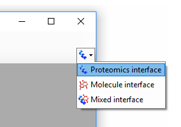
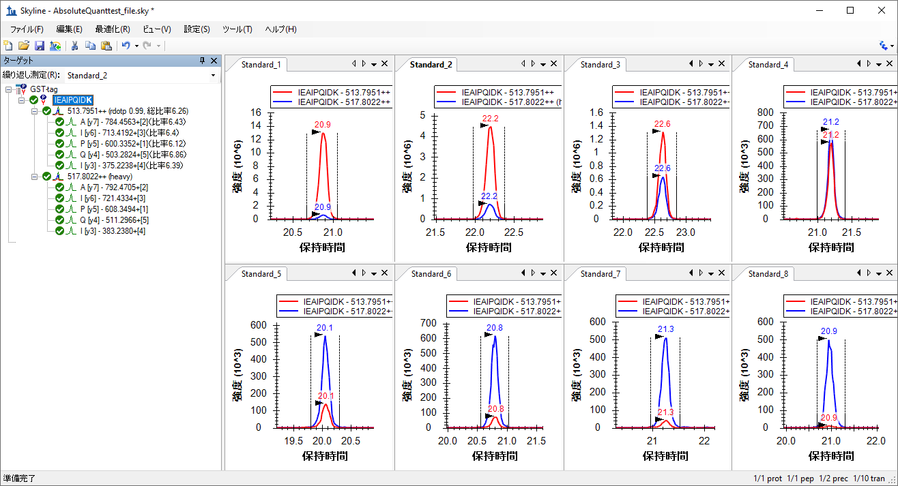
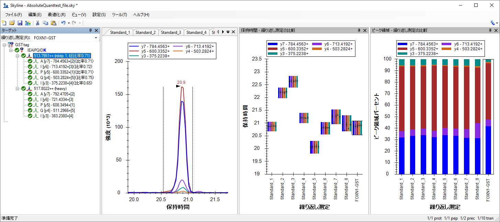
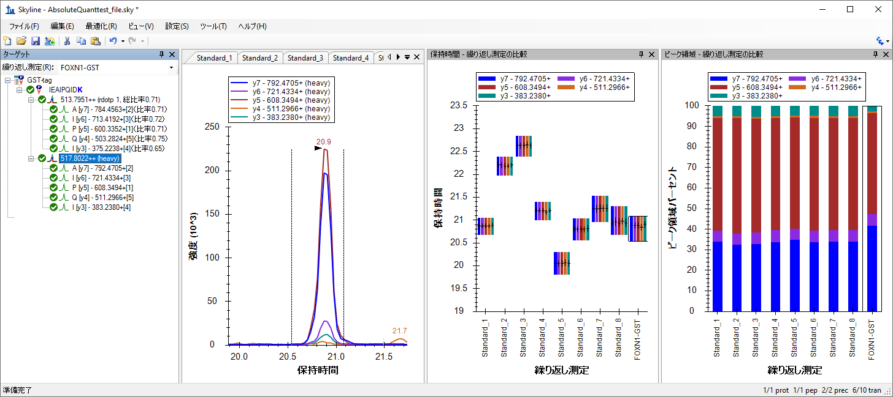
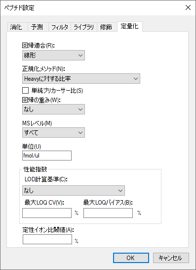
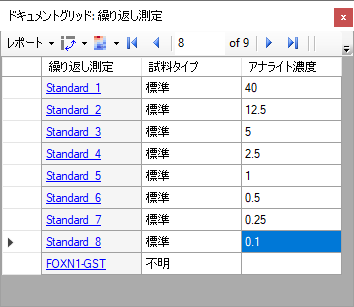
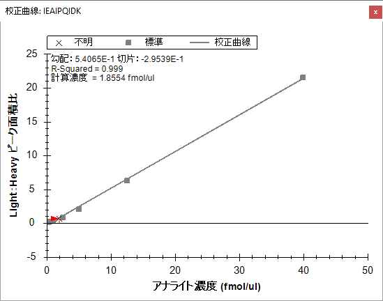

This tutorial covers how to determine the absolute abundance of a target protein using Selected Reaction Monitoring (SRM) mass spectrometry. Specifically, we will demonstrate how to use an external calibration curve with an internal standard heavy labeled peptide for normalization.
Peptide absolute abundance measurements can be obtained using either a single-point or a multiple-point calibration. Single-point internal calibration absolute abundance measurements are generated by spiking into a target sample a heavy labeled “standard” version of the target peptide that is of known abundance. The absolute abundance of the “sample” target peptide is obtained by calculating the relative abundance of the light “sample” target peptide to the heavy “standard” target peptide1. One drawback is that this approach assumes that a light-to-heavy ratio of 2 implies that the light peptide is actually twice as abundant as the heavy peptide – this is referred to as having a peptide response with a slope of 1. Furthermore, this approach of using a single point internal calibration makes the assumption that both the light and the heavy peptide are within the linear range of the mass spectrometry detector. However, these assumptions are not always correct2,3,4,5.
Multiple-point external calibration experiments correct for situations where the peptide response does not have a slope of 1. This calibration is done by measuring the signal intensity of a “standard” peptide at multiple calibration points of known abundance and generating a calibration curve. This calibration curve can then be used to calculate the concentration of the target peptide in a sample, given the signal intensity of that peptide in that sample3. One drawback is that this method requires multiple injections into the mass spectrometer to build a calibration curve.
To improve the precision of absolute abundance measurements using an external calibration curve, stable isotope labeled internal standards are often used6. Imprecise measurements of the ion intensity of a peptide often arise from sample preparation, autosampler or chromatographic irregularities. By adding an identical quantity of a standard heavy labeled peptide to each of the calibrants and the sample, one is able to measure the ratio of calibrant-to-standard or sample-to-standard, also known as normalization. This approach is favored as this ratio is unaffected by some sample preparation, autosampler or chromatographic irregularities. Consequently, by performing peptide absolute quantification using an external calibration curve and normalization to an internal standard heavy labeled peptide one is able to obtain the most accurate and precise measurements while minimizing the amount of valuable sample that has to be used.
This tutorial will work with data published in Stergachis et al.7 where the absolute abundance of GST-tagged proteins were measured using a “proteotypic” peptide present within the GST-tag (Tutorial Figure 1A). For any absolute quantification experiment, it is critical to first identify one or more “proteotypic” peptides that will be used to quantify the protein of interest. The peptide IEAIPQIDK was identified as “proteotypic” based on its strong signal intensity relative to other tryptic peptides in the GST-tag (unpublished). Also, this peptide uniquely identifies this schistosomal GST-tag as opposed to other human glutathione-binding proteins.
For this experiment, FOXN1 protein containing an in frame GST-tag was generated using in vitro transcription/translation and full-length proteins were purified using glutathione resin (Tutorial Figure 1B). Heavy labeled IEAIPQIDK peptide was then spiked into the elution buffer and the sample was digested and analyzed using selected reaction monitoring (SRM) on a Thermo TSQ Vantage triple-quadrupole mass spectrometer. An external calibration curve was generated using different quantities of a light IEAIPQIDK peptide that was purified to >97% purity and the concentration determined by amino acid analysis. Heavy labeled IEAIPQIDK peptide was also spiked into these calibrants at the same concentration as in the FOXN1-GST sample (Tutorial Figure 1C). It is important to note that it does not matter what the concentration of the heavy peptide is in each of the samples, so long as it is the same. However, it is best if the amount of heavy peptide in the samples is similar to the amount of light peptide originating from FOXN1-GST. Also, it is best if the concentration of the light peptide originating from FOXN1-GST falls somewhere in the middle of the concentration range tested using the different calibrants.
Tutorial Figure 1. Experimental Overview
(A) Schistosomal GST-tag protein sequence. The tryptic peptide used for quantification purposes is indicated in red.
(B) Schematic of the synthesis, enrichment, digestion and analysis of tagged proteins.
(C) Samples monitored and the abundance of light and heavy IEAIPQIDK peptide in each.
To start this tutorial, download the following ZIP file:
https://skyline.gs.washington.edu/tutorials/AbsoluteQuant.zip
Extract the files in it to a folder on your computer, like:
C:\Users\absterga\Documents
This will create a new folder:
C:\Users\absterga\Documents\AbsoluteQuant
If you have been using Skyline prior to starting this tutorial, it is a good idea to revert Skyline to its default settings. To do so:

The document settings in this instance of Skyline have now been reset to the default.
Since this tutorial covers a proteomics topic, you can choose the proteomics interface by doing the following:

Skyline is operating in proteomics mode which is displayed by the protein icon  in the upper
right-hand corner of the Skyline window.
in the upper
right-hand corner of the Skyline window.
Now, you should be looking at Skyline with a new empty document.
Before you insert a peptide sequence into Skyline, it is important to make sure that all of the peptide and transition settings are correctly configured for this experiment. The settings described below are designed for 13C615N2 L-Lysine labeled internal standard peptides. If you are using a different isotope, please choose the appropriate isotope modification in the Peptide settings configuration.
The form should now look like this:

| Note: Normally you would want to choose “last ion” which is equivalent to yn-1 (or y8 for a 9 amino acid peptide like IEAIPQIDK used in this experiment. However, the experiment used “last ion – 1” due to a confusion between it and “n-1”. |
The Transition Settings form should look like this:

The Edit Isotope Modification form should now look like this:

The Peptide Settings form should now look like this:

Since the experiment uses a heavy labeled internal standard peptide, the Internal standard type drop-list can be left as the default heavy.

After performing the above steps, the main Skyline should now look like this:

Before exporting your first transition list, first save your document to the AbsoluteQuant folder by doing the following:
If you were running this experiment yourself on a mass spectrometer, you would need an instrument method. Skyline can export directly to an instrument method, given a template method, but here you will export a transition list, which you could import into a template instrument method yourself at another time. Do the following to achieve this:
The Export Transition List form should appear as shown below, with “Thermo” automatically chosen in the Instrument type list, based on the “Thermo TSQ Vantage” value you chose from the Collision energy dropdown list in the Transition Settings – Prediction tab.

You can also see that all of the other settings are appropriate for this very simple target list.
The resulting transition list was imported into a Thermo TSQ Vantage triple-quadrupole mass spectrometer template method file. You may now want to open the resulting GST-tag.csv file in Excel or a text editor to see what it looks like.
In this next section you will work with the nine samples indicated in Tutorial Figure 1C. You will import the .RAW files into Skyline to view the data. Data will be imported into the saved Skyline document that was generated in the previous section. The files that you will import are contained in the AbsoluteQuant folder you created for this tutorial and are named:
These RAW files were collected in a random order and were interspersed among a larger set of runs. The results as fully processed with Skyline can be found in the Supplemental Data 2 for the original paper (http://proteome.gs.washington.edu/supplementary_data/IVT_SRM/Supplementary%20Data%202.sky.zip).
Before you look at the FOXN1-GST sample, you should first become familiar with the standards.
The Import Results form should look like this:


It may take a few moments for Skyline to import all of the RAW files.
To ensure that the chromatographic peaks for each of the standards looks good, it is best to view all of the chromatograms next to each other in a tiled view. Do the following to achieve this layout:
You will see the heavy (Blue) and light (Red) total chromatograms displayed together in a graph for each standard as shown below:

What to inspect when looking at the chromatographic traces for the standards:
Next you will want to import the FOXN1-GST.RAW file into the current Skyline document using the same instructions as detailed above.
To ensure that this sample looks good, inspect the chromatographic trace, the fragmentation pattern and the retention time of both the heavy and light peak. To help, you will want to show summary plots as follows:
Arrange the windows as follows for better viewing:
You can then select either the light precursor:

Or the heavy precursor:

Verify the following:
If this does not appear to be so, then an incorrect peak is likely selected for one of the samples, or a transition may be experiencing noticeable interference.
Another way to view the data is to follow these steps:
The values displayed in the Peak Areas graph will be the ones used later in the calibration curve. It can be easily observed from this graph that the light-to-heavy ratio for the FOXN1-GST sample falls somewhere in the middle of the ratios from the calibration points. This is ideal, as this portion of the calibration curve is best for quantification purposes.

For this tutorial, you will make a calibration curve in Skyline.
The Peptide Settings form should look like this:

| Standard | 40 |
| Standard | 12.5 |
| Standard | 5 |
| Standard | 2.5 |
| Standard | 1 |
| Standard | 0.5 |
| Standard | 0.25 |
| Standard | 0.1 |
The Document Grid: Replicates form should look like this:

You should see a graph that looks like this:

The slope and intercept are displayed on the calibration curve. They can be used to convert between peak area ratio and concentration with a standard y = m * x + b equation
concentration = (ratio - intercept) / slope
Also, calculated concentration of the currently selected replicate is displayed on the calibration form. Here the concentration of the unknown sample is shown as 1.8554 fmol/ul.
This tutorial presented the advantages of different absolute abundance experimental setups and demonstrated how to determine absolute abundances using an external calibration curve with an internal standard heavy labeled peptide for locating the correct integration range even at very low analyte abundance and for normalization. This method provides accurate and precise absolute measurements while minimizing the amount of valuable sample that has to be used during the experiment.